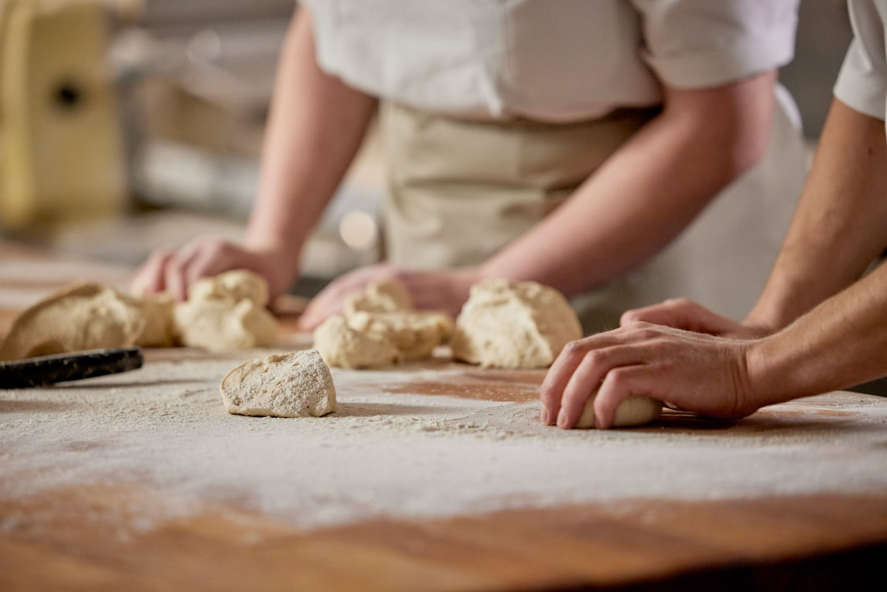

Pastelería Mil Sabores
¡50 años creando dulces recuerdos!

Nuestra Historia
El origen de Mil Sabores se remonta 50 años atrás, cuando nuestra fundadora tomó recetas de repostería tradicionales de Chile y les dió un toque personal. Algo que empezó como un simple negocio creció de manera imprevista y no fue hasta 1995, año en que batió un record guinness gracias a su colaboración en la torta más grande del mundo que su reconocimiento traspasó las fronteras. Desde entonces, trabajamos con amor y dedicación para entregar la mejor calidad para acompañar con cariño cualquier ocación.
Adaptados a todos los paladares
Los tiempos cambian y la tradición debe adaptarse. En nuestra pastelería siempre habrá un sabor para cada persona, es por eso que hemos expandido nuestro catálogo para incluir opciones veganas, sin azúcar y sin glúten entre otras.¡ Nuestra prioridad es que todos nuestros clientes tengan un dulce recuerdo!
Sabores de ayer, hoy y mañana
Desde nuestra concepción, mil sabores se ha destacado por experimentar para dar un giro a sabores clásicos. En gustos no hay nada escrito y por ello en cada pedido puedes encontrar tradición e innovación. Es por esto, que estamos orgullecidos de trabajar con la comunidad y con DuocUc, para fomentar la carrera de futuros cocineros que llevarán la alegría a nuevas generaciones.